arXiv 2511.00062 · cs.CV · v2 2026 年 2 月 24 日 · NVIDIA 技术报告 · 中文精读
World Simulation with Video Foundation Models for Physical AI
作者署名 NVIDIA，附录 A.1 按字母顺序列出 88 位贡献者（Arslan Ali 到 Yuke Zhu）。
关于这份精读。这篇在 arXiv 摘要页登记的许可是 CC BY 4.0，但 PDF 首页页脚印着 “© 2026 NVIDIA. All rights reserved”，两者矛盾（和本站 SONIC、GraspGen 的情况一样，见读者注 1）。这一批 NVIDIA Cosmos / GR00T 论文由站点作者决定都放原图，所以下面 20 张图从 arXiv PDF（v2）裁切，只做了裁切、缩放和格式转换，没有改内容，版权归原作者。每张图注写明出处和“看原图”链接。
按原文顺序覆盖第 1 到 8 节和附录 A，小节编号和原文一致，用自己的话整理，不逐字翻译。公式按原文编号，表格数字照录。“读者注”是我核算或对照时发现的，不属于论文内容，页尾有汇总。
代码。nvidia-cosmos/cosmos-predict2.5 读的是提交 a2c298b（2026-06-08），cosmos-transfer2.5 读的是 2ff49d0（2026-06-07）。两个仓库的代码是 Apache-2.0，权重按 NVIDIA Open Model License 发布。只读，没有运行。仓库里有训练配置（实验名、超参）和网络定义，所以论文里不少训练设定能和代码对上。HF 上的权重是 PyTorch .pt，没有 safetensors 文件头可读；我用 HF API 给的文件大小（bf16 每个参数 2 字节）核对参数量。
本页的位置。OpenWAM §4.1.1 比较的四个视频骨干里有 Cosmos-Predict2.5-2B（91.64），OpenWAM 仓库也支持它当视频骨干。末尾一节 和 OpenWAM 的关系 对照了 OpenWAM 的接法。同批的 Cosmos（Predict1）、Cosmos-Transfer1、Cosmos-Reason1、Cosmos Policy、Cosmos 3 各有一页。
Cosmos-Predict2.5 是 NVIDIA Cosmos 世界基础模型的第二代视频生成模型（第一代是 Cosmos-Predict1）。结构仍是“视频 tokenizer + 文本编码器 + DiT”，但三处都换了：训练目标从 EDM 换成流匹配；视频 tokenizer 直接用 Wan2.1 的 VAE；文本编码器从 T5 换成自家的视觉语言模型 Cosmos-Reason1。一个模型同时做 Text2World、Image2World、Video2World。发布 2B 和 14B 两个尺寸。
读完我认为最值得记住的三点：
timestep_scale = 0.001（时间嵌入看到的是 0 到 1），而 OpenWAM 构建网络时没有传这个参数（默认 1.0），喂进去的是 0 到 1000。这是只读代码得出的，没跑过，建议复现时先打印核对（读者注 20）。物理 AI（带传感器和执行器的具身智能体）直接在真实世界里训练又慢又贵又危险，能按智能体动作生成逼真画面的世界模拟器可以当安全的替身。Cosmos-Predict2.5 相对 Predict1 有三处改进：数据过滤更严，加了物理 AI 的后训练数据；结构简化，三种生成模式合到一个模型；训练流程加了模型合并和新的 RL 算法，文本编码器从 T5 换成 Cosmos-Reason1。下游用途是给 VLA 训练造合成数据、做动作条件的策略评估、驾驶多视角模拟和机器人多视角生成。另外把它扩展成 ControlNet 式的 Cosmos-Transfer2.5，比 Transfer1 小 3.5 倍、质量更高。表 1 是发布的模型清单。
| 模型 | 能力 | 输入 |
|---|---|---|
| Cosmos-Predict2.5 基础模型 | ||
| Predict2.5-2B / 14B pre-trained | 预训练基础模型 | 文本 + 图像或视频 |
| Predict2.5-2B / 14B post-trained | 后训练基础模型 | 文本 + 图像或视频 |
| Cosmos-Predict2.5 领域专用 | ||
| 2B/auto/multiview | 驾驶，7 路相机 | 文本 + 图像或视频 |
| 2B/robot/action-cond | 机器人，动作条件 | 动作 |
| 2B/robot/multiview-agibot | 机器人，AgiBot 数据，3 路相机 | 文本 + 图像 |
| 14B/robot/gr00tdream-gr1 | 机器人，GR00T GR1 数据 | 文本 + 图像或视频 |
| Cosmos-Transfer2.5 | ||
| 2B/general | ControlNet | 边缘、模糊、分割、深度 |
| 2B/auto/multiview | 驾驶，多视角 ControlNet | 世界场景图 |
| 2B/robot/multiview | 机器人，3 路相机 | 文本 + 第三人称视频 |
| 2B/robot/multiview-agibot | 机器人，AgiBot 数据，3 路相机 | 文本 + 头部视角视频 |
HF 的 2B 仓库里还有表 1 没列的 base/distilled（4.2.3 节的蒸馏模型）和 robot/policy/libero、robot/policy/robocasa（这是 Cosmos Policy 的权重）。
(1) arXiv 摘要页登记 CC BY 4.0（licenses/by/4.0）；(2) PDF 首页页脚印着 “© 2026 NVIDIA. All rights reserved.”，和 CC BY 矛盾，原文没解释，处理同本站 SONIC、GraspGen 页：图注写明 arXiv 登记的许可，并说明是站点作者决定放原图；(3) 摘要说“源代码、预训练检查点和基准按 NVIDIA Open Model License 发布”，但两个代码仓库的 LICENSE 实际是 Apache-2.0，README 写明“源代码 Apache 2，模型按 NVIDIA Open Model License”。HF 的 2B 仓库是需要登录同意条款的 gated 仓库（API 返回 gated: auto），14B 不是。
两处改进：通用数据管线的各个组件升级；另外专门整理了一批物理 AI 领域的高质量数据。
结论：处理 3,500 万小时原始视频（Predict1 是 2,000 万小时），切出 60 多亿段 5 到 60 秒的片段，只有约 4% 通过全部过滤，得到约 2 亿段预训练片段（Predict1 的通过率是 30%）。
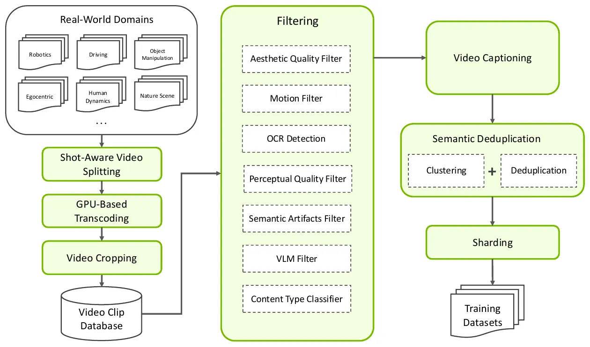
切分和过滤。先用镜头边界检测切开长视频，转码并裁掉黑边，丢掉 5 秒以下的片段。过滤器按代价从低到高排：美学打分；运动量；OCR（去掉文字叠加多的）；感知质量（类似 DOVER，去技术失真）；“语义瑕疵”（类似 VTSS，去画中画、生硬转场）；最后用 VLM（Qwen2.5-VL）做高精度复查。通过的片段再用内容类型分类器分类，并去掉游戏、合成图案、动画、卡通等不符合物理世界分布的内容。
描述。每段按 5 秒窗口切开，用 Qwen2.5-VL-7B 生成短、中、长三种长度的描述，提示词强调主要物体、运动和关键细节。
去重和分片。先按嵌入相似度聚类，类内两两比较，保留分辨率最高的版本；采用在线去重，新片段和已保留的比较，平局时保留更早、分辨率更高的。再用 26 类的内容类型分类器打标签，按内容类型、分辨率、宽高比、时长分片，方便课程式训练和领域配比。基础设施升级到 PB 级，接入 Delta Lake 做 SQL 分析、Milvus 做向量检索。
“6 亿多段里约 4% 通过、得到约 2 亿段”：2 亿 / 60 亿 = 3.3%，按“60 多亿”算还会更低；要到 4% 需要原始片段只有 50 亿。两个数大致对得上，但“约 4%”偏高。另外 2.1 节开头说“处理了 2 亿多个原始视频”，和最终“2 亿段可训练片段”恰好是同一个量级，读的时候别混：前者是原始长视频，后者是切分过滤后的片段。表 5 后训练各领域合计 10.4 + 1.0 + 1.6 + 3.1 + 0.73 + 0.388 = 17.2M 段。
五个领域：机器人、自动驾驶、智能空间、人体动作、物理。流程和图 1 相似，区别是不用 VLM 过滤器、改用领域相关的过滤器子集和阈值，描述用更大的 VLM 和领域定制的提示词。产出并入通用预训练数据。
去掉低分辨率和近乎静止的视频；动作太慢的视频加快播放，统一节奏。描述提示词要求先列初始场景，再按时间顺序描述动作（直线、旋转）、用到的部件（手臂、手腕、夹爪）、相机运动和物体属性；并把数据集自带的元信息塞进提示词减少幻觉，例如 GR00T 的任务描述和人工成功评分、Bridge 的分步指令、AgiBot 的初始场景描述。
| 数据集 | 本体 | 中间视角 | 左视角 | 右视角 |
|---|---|---|---|---|
| AgiBot-Beta（论文） | 双臂 | 194k | 30k | 30k |
| Bridge（论文） | 单臂 | 36k | - | - |
| DROID（论文） | 单臂 | 39k（腕部） | 51k | 51k |
| GR00T（本站 GR00T 页） | 双臂 | 3k | - | - |
| 1X | 双臂 | 17k | - | - |
| OpenX（论文） | 单臂 | 500 | - | - |
| RoboMIND（论文） | 双臂 / 人形 | 16k | 6k | 7k |
表 2 · 机器人数据集按视角的视频数。中间视角合计约 305.5k，左 87k，右 88k（我加的合计）。
NVIDIA 内部平台采集的约 310 万段 20 秒环视视频，7 路同步相机（前广角、前长焦、左、右、后、左后、右后）。按地域、车流密度、自车速度和加速度、机动、道路类型、少见结构（隧道、收费站）、能见度、天气、光照等属性从大库里抽样。描述关注需要注意的交通参与者和交通元素、天气路况、自车和他车的纵横向元动作、速度、其他物体的状态变化、关键物体之间的交互，也写短中长三种。
仓库、工厂、工地等场景。用关键词搜视频，VLM 判断相关性，切分过滤后约 4 万段，再用 VLM 按工业场景的语气写描述。
保留 5 秒以上的片段，用 YOLOX 检测人、RTMPose 估计全身关键点和面部点。入选条件：40% 以上的帧有人，任一帧不超过 8 人，至少一人占画面 3% 以上。描述强调人体动作细节。
先定一个可视物理现象的分类体系（经典力学、流体力学等，例如玻璃破碎、球相撞、水流），按它收集视频，并让 VLM 写清物理过程和物体交互。
结论：Predict1 用 EDM，Predict2.5 改用流匹配（FM）。两者前向和反向过程在数学上等价，差别在网络的参数化：EDM 让网络输入输出都接近标准高斯，FM 让网络直接预测扩散轨迹的速度，作者说后者优化更平滑、样本质量更好。
给定数据 \(\mathbf{x}\)、噪声 \(\boldsymbol\epsilon\sim\mathcal N(0,I)\)、时间 \(t\in[0,1]\)（从 logit-normal 分布采样）：
这里 \(t=0\) 是数据、\(t=1\) 是噪声（和 Wan 报告 的约定正好相反，Wan 的 \(t=1\) 是数据）；\(\mathbf c\) 是文本嵌入、参考帧等条件。
为什么要偏向高噪声。高分辨率内容相邻像素高度相关，噪声太小时模型“打不散”这种相关性，学不到结构。所以采用 SD3 的 shifted logit-normal：先从 logit-normal 采 \(t\)，再做单调变换
\(\beta\) 越大，\(t_s\) 越偏向高噪声；\(\beta=1\) 时不变。
算一下。代码里 logit-normal 是 sigmoid(randn)，即均值 0、标准差 1（schedulers/rectified_flow.py 第 67-68 行）。\(t\) 的中位数是 0.5，\(\beta=5\) 后变成 \(5\times0.5/(1+4\times0.5)=0.833\)；\(t=0.1,0.25,0.75,0.9\) 分别变成 0.357、0.625、0.938、0.978。我用 40 万个样本算：\(\beta=5\) 时 \(t_s\ge0.98\) 的比例只有 1.1%（\(\beta=1\) 时 0.005%）。
和 4.1 节的“高噪声补丁”对照。4.1 节说为了消除帧间突变，让 5% 的样本专门从噪声最高的 2% 里抽。代码 text2world_model_rectified_flow.py 第 104-107 行正是 high_sigma_ratio = 0.05、high_sigma_timesteps_min = 980、max = 1000（1000 步里的最高 2%）。按上面的数，这相当于把这一段的采样比例从约 1.1% 提到约 6%。但公开代码里这个分支开头就是 raise NotImplementedError("High sigma strategy is buggy when using CP")（第 755 行），发布的 2B 预训练配置（model_2B_reason_1p1_rectified_flow.py）也没有打开它，只是实验名里带 “high_sigma”。发布的权重训练时到底有没有用，从公开代码看不出来，未核实。
结论：DiT 大体沿用 Predict1，主要改动是去掉绝对位置编码，只留相对位置编码（3D RoPE），好在后训练时外推到更高分辨率和更长序列。tokenizer 换成 Wan2.1 VAE，文本编码器换成 Cosmos-Reason1。
| 配置 | 2B | 14B |
|---|---|---|
| 层数 | 32（代码 28，见读者注 4） | 36 |
| 模型宽度 | 2,048 | 5,120 |
| FFN 隐层 | 8,192 | 20,480 |
| AdaLN-LoRA 维度 | 256 | 256 |
| 注意力头数 | 16 | 40 |
| 头维度 | 128 | 128 |
| MLP 激活 | GELU | |
| 位置编码 | 3D RoPE | |
表 3 · Cosmos-Predict2.5 的配置（括号里是我加的代码核对）。
代码。configs/video2world/defaults/net.py 第 82-87 行：COSMOS_V1_2B_NET_MININET.num_blocks = 28（14B 是 36）；发布的 2B 实验配置用的就是这个 cosmos_v1_2B。动作条件、多视角、Transfer 的 2B 配置也全是 28。OpenWAM 的接入代码（cosmos_predict25/pipeline_builder.py 第 39-53 行）写着“和探查过的 *_ema_bf16.pt 一致：28 块，宽 2048，头维 128，上下文 1024”。
权重文件。我按 minimal_v4_dit.py 的层定义逐项算（每块：自注意力 4d² 加 q/k 的 RMSNorm；交叉注意力 2d² + 2 × 1024d；MLP 8d²；三组 AdaLN-LoRA 各 256d + 256 × 3d；外加 patch 嵌入 72 × d、时间嵌入 d² + 3d² + d、输出层、文本投影 100352 × 1024 + 1024）：每块 69,206,528 个参数，28 层合计 2,059,174,912，32 层会是 2,336,001,024。HF 上 base/post-trained/…_ema_bf16.pt 是 4,118,575,006 字节，除以 2 得 2,059,287,503，比 28 层的算数只多 11 万（约 0.2 MB，是 pickle 的键名和元数据），32 层则差 2.8 亿。14B 按 36 层算 14,368,047,104，文件 28,736,391,006 字节 / 2 = 14,368,195,503，同样对上。
论文自己的旁证。6.1 节说 Transfer2.5 “每 7 个主干块后插一个控制块，共 4 个”：28 / 7 = 4 正好；32 层按每 7 块一个会是 5 个。代码里 control_layers = range(0, num_blocks, 7) = [0, 7, 14, 21]。所以表 3 的 32 应是笔误。
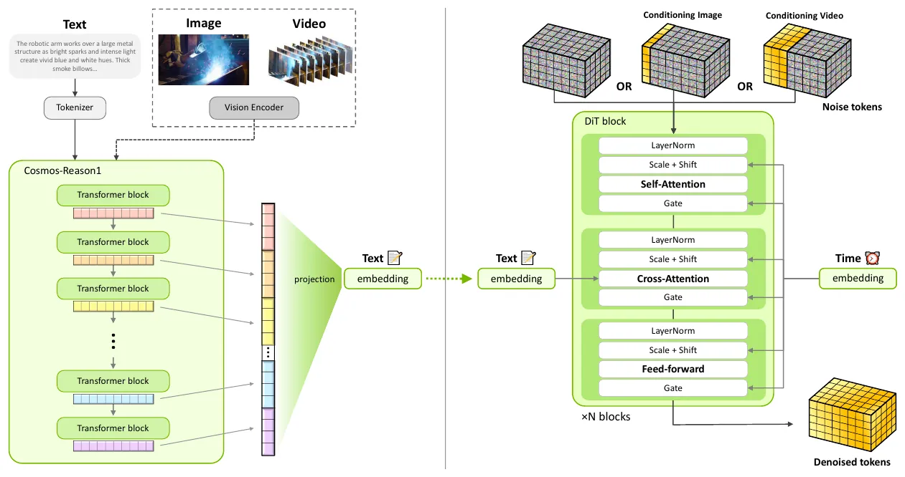
视觉 tokenizer。用 Wan2.1 VAE：因果 VAE，时间、高、宽压缩 4 × 8 × 8。在其上再做 1 × 2 × 2 的 patch 化。一次生成 93 帧（24 个隐帧），16 fps，约 5.8 秒。
文本编码器。用 Cosmos-Reason1 代替 T5。不只取某一层的输出，而是把多个块的激活按 token 拼起来，投影到 1024 维（参考 Wang 等人对仅解码器 LLM 做文生图编码器的研究），经交叉注意力注入。Reason1 的视觉编码器还能接收图像、视频做风格控制，留作以后。
用户特别问过这一点。代码核对结果：
model_2B_reason_1p1_rectified_flow.py 第 339-343 行：text_encoder_class = "reason1p1_7B"，embedding_concat_strategy = FULL_CONCAT，compute_online = True，权重指向内部的 Reason1 SFT 检查点。检查点注册表（packages/cosmos-oss/cosmos_oss/checkpoints.py 第 59-70 行）把它登记为 “nvidia/Cosmos-Reason1.1-7B”，下载地址是 HF 的 nvidia/Cosmos-Reason1-7B（修订 3210bec）。论文说 Reason1，代码里是内部叫 1.1 的版本，HF 上用同一个仓库名。text_encoders/text_encoder.py 第 189-202 行）：取 hidden_states[1:]，即 28 个 transformer 层的输出（去掉词嵌入层），每层每个 token 做 \((h-\mu)/(\sigma+10^{-8})\)，再沿通道拼接：28 × 3584 = 100,352 维。论文“多个块”实际是全部块。minimal_v4_dit.py 第 1565-1569 行）：crossattn_proj = Linear(100352, 1024, bias=True) + GELU，参数 100,352 × 1024 + 1024 = 102,761,472，占 2B 总数的 5.0%。它属于 DiT，跟着 DiT 一起训练；Reason1 本身冻结。三种模式。Text2World 只给文本；Image2World 加一张参考图；Video2World 给一段视频，做连续续写或变换。图像和视频条件都用帧替换：生成序列开头的帧一律替换成条件帧。好处是条件帧数可调，也让开头的帧忠实于条件，视觉线索能顺畅传到后面的帧。
自己画的 · 11 幕 3D 框架动画
从数据到推理拆成 11 幕：总览、数据漏斗、VAE 和 patch 化（可切换三个分辨率阶段，现算 token 数）、Reason1 文本编码（28 层拼接再投影）、DiT 块和参数量（可切换 2B / 14B、28 / 32 层）、流匹配和 shift（可切换 β，现抽样）、帧替换条件（T2W / I2W / V2W）、后训练流水线（SFT → 合并 → RL → 蒸馏）、Transfer2.5 控制分支、领域后训练（驾驶多视角 / 相机控制 / 动作条件）、结果和 OpenWAM。下面嵌的是第 5 幕。
渐进式：多阶段预训练（分辨率和任务难度逐步加）→ 分领域 SFT → 模型合并 → RL。
结论：先 256p 文生图，再加 Image2World / Video2World 联合训练，分辨率 256p → 480p → 720p，最后加 Text2World。
| 任务 | 分辨率 | 帧数 | 每样本 token 数（我算的） |
|---|---|---|---|
| Text2Image | 256p（320 × 192） | 1 | 240 |
| Text2Image | Video2World | 256p（320 × 192） | 1 | 93 | 240 | 5,760 |
| Text2Image | Video2World | 480p（832 × 480） | 1 | 93 | 1,560 | 37,440 |
| Text2Image | Video2World | 720p（1280 × 704） | 1 | 93 | 3,520 | 84,480 |
| Text2Image | Video2World | Text2World | 720p（1280 × 704） | 1 | 93 | 93 | 3,520 | 84,480 |
表 4 · 渐进预训练各阶段（最后一列是我按 VAE 8 倍、patch 2 倍、93 帧 → 24 个隐帧算的）。
93 帧经 4 倍时间压缩：\(1+(93-1)/4=24\) 个隐帧，和正文一致；93 / 16 fps = 5.81 秒，对上“约 5.8 秒”。720p 一个样本：隐变量 24 × 88 × 160，patch 后 24 × 44 × 80 = 84,480 个 token。4.3 节说“单个序列可以有几十万个 token”，单视角 93 帧 720p 到不了；6.3 节的 7 路驾驶（每路 8 个隐帧）是 56 × 44 × 80 = 197,120，才接近 20 万。
联合训练。Image2World / Video2World 阶段随机取 1 或 5 帧条件，生成其余 92 或 88 帧。条件帧和带噪帧拼在一起送进 DiT；每个输入 token 再拼一个二值掩码，标明它是不是条件。去噪损失只算在要生成的帧上。每个分辨率阶段等模型收敛、画质不再提升再进下一阶段。最后加 Text2World，条件帧数按 0 / 1 / 2 取，概率 0.5 / 0.25 / 0.25。
前者是像素帧，后者是隐帧。Wan2.1 VAE 首帧单独编码、之后每 4 帧一个隐帧，所以 1 个隐帧 = 1 个像素帧，2 个隐帧 = 1 + 4 = 5 个像素帧。代码里写的就是隐帧：min_num_conditional_frames = 0、max = 2、conditional_frames_probs = {0: 0.5, 1: 0.25, 2: 0.25}（model_2B_reason_1p1_rectified_flow.py 第 303-305 行）。
掩码怎么拼。MinimalV1LVGDiT（networks/minimal_v1_lvg_dit.py）把输入通道加 1 放条件掩码，MiniTrainDIT 又加 1 放 padding 掩码，所以 patch 嵌入的输入是 (16 + 1 + 1) × 1 × 2 × 2 = 72 维，线性映射到 2048。
“只在生成帧上算损失”的实现。video2world_model_rectified_flow.py 第 130-135 行：网络输出在条件帧位置被替换成真值速度 \(\boldsymbol\epsilon-\mathbf x\)，这些位置的误差恒为 0。损失仍然是对全部位置取平均，所以条件帧越多，单样本损失的数值越小（我的推断，代码没有按非条件帧数重新归一）。条件帧的时间步：基础配置里条件帧和其余帧用同一个 \(t\)（conditional_frame_timestep = -1 表示不启用），后训练权重对应的实验把它设成 0.1（见代码对照）。
时间步。从 logit-normal 采样，shift 随分辨率递增：256p 时 \(\beta=1\)，到 720p 时 \(\beta=5\)。这样仍会出现帧间突变，作者认为是高噪声区样本太少，于是让 5% 的训练样本专门从噪声最高的 2% 里抽，突变明显减少（代码情况见读者注 3）。
优化器。AdamW，\(\beta_1=0.9\)、\(\beta_2=0.999\)；学习率 2B 为 \(3\times10^{-5}\)、14B 为 \(1.3\times10^{-5}\)；权重衰减 0.001；线性衰减的学习率，前 2000 步预热。
发布的 2B 预训练权重（d20b7120…）对应实验 …T2V_high_sigma_loss_reweighted_1_1_rectified_flow_only_resume2，它继承 …_rectified_flow_only（model_2B_reason_1p1_rectified_flow.py 第 263-432 行）。逐项对照：
timestep_scale = 0.001（见读者注 20）；图像和视频按 1 : 3 混合，图像 batch 12、视频 batch 1（每卡）。_standalone 实验（第 117-119 行，预热 2000，因子 0.5 → 0.2）。可能不同阶段设定不同，论文只写了一种，未核实。_rectified_flow_only 从 …T2V_high_sigma_loss_reweighted 第 1 万步的检查点开始；后者用的是 EDM 类的模型代码（text2world_model.py）但设了 scaling = "rectified_flow"，HF 上 base/pre-trained/308eb96c… 就是它。也就是说 2B 是先在 EDM 框架里以流匹配的损失权重训练，再切到纯流匹配的代码继续训练。论文只说“采用流匹配”。结论：每个领域单独微调一个模型，比混在一起训练省去配比调参；各自在本领域明显变好，通用领域只略降，再用模型合并补回来。
在 InternVideo2 嵌入上训练多头分类器，把样本分到五个领域：物体恒存、高运动、复杂场景、驾驶、机器人操作。每个领域模型训练 3 万步、batch 256，超参同预训练最后阶段。
| 领域 | 物体恒存 | 高运动 | 复杂场景 | 驾驶 | 机器人操作 | 4K |
|---|---|---|---|---|---|---|
| 视频数 | 10.4M | 1.0M | 1.6M | 3.1M | 730K | 388K |
表 5 · 后训练各领域的视频数。
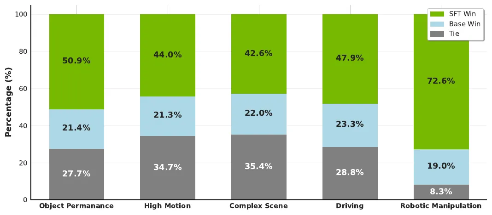
4K 冷却。另外在预训练模型上用精选 4K 视频做一段冷却训练，学习率线性降到 0，细节和运动更好。
模型合并。把各领域 SFT 模型和冷却模型合成一个。试了 model soup、TIES、DARE-Linear、DARE-TIES 四种，每种扫超参得到 20 多个候选，先在一小组难例上挑，再用更大的评测集做人工投票确认。一个发现：直接网格搜索超参，比按各 SFT 模型胜率启发式地定权重更好。除 DARE-Linear 外几种方法差不多，最终选最简单的 model soup。
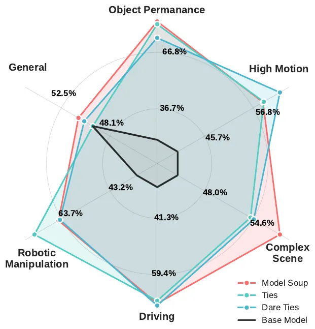
堆叠柱三段之和：图 3 物体恒存 50.9 + 21.4 + 27.7 = 100.0，高运动 100.0，复杂场景 100.0，驾驶 100.0，机器人操作 72.6 + 19.0 + 8.3 = 99.9（取整）；图 5 两根 100.0；图 6、图 7 各两根都是 100.0。正文引用的数（30.0 对 26.2、33.0 对 34.8、48.6 对 31.8、38.1 对 35.9）和图一致。几处平局比例很高：图 5 合并 + RL 46.7%，图 6 对 Wan2.2-5B 43.8%，“更受偏好”多是几个百分点的差。图 4 的雷达图没有逐点标注所属方法，我只能按位置推断哪组数属于 Model Soup。
结论：把条件看作状态、整条去噪轨迹看作动作，用 VLM 奖励模型 VideoAlign（评文本对齐、运动质量、画面质量）按 GRPO 的方式做 RL，奖励和人工偏好都提升。
每个条件生成 8 个样本（20 步去噪），在组内对奖励做归一化得到优势。显存不够算整条轨迹的概率，就把轨迹概率拆成每一步条件概率之和，每两步算一次梯度、累积整条轨迹（共 10 次）再更新一次参数。训练 256 步、batch 32。用微调数据上的扩散损失做正则，缓解奖励作弊（细节在 Ye 等人 2025，arXiv 2512.04332）。在合并模型上做完 RL 后的 EMA 权重就是发布的 post-trained 检查点。
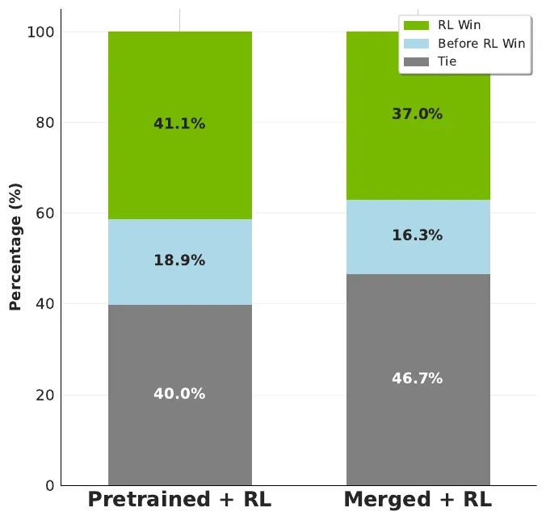
| 模型 | Text2World | Image2World | ||||||
|---|---|---|---|---|---|---|---|---|
| 文本对齐 | 运动质量 | 画面质量 | 和 | 文本对齐 | 运动质量 | 画面质量 | 和 | |
| 2B 预训练 | 1.55 | -0.43 | -0.05 | 1.08 | 1.48 | -0.76 | -0.49 | 0.23 |
| + RL | 1.69 | -0.19 | 0.19 | 1.69 | 1.57 | -0.70 | -0.45 | 0.42 |
| 2B 合并 | 1.69 | -0.46 | -0.01 | 1.23 | 1.57 | -0.82 | -0.52 | 0.24 |
| + RL | 1.75 | -0.18 | 0.18 | 1.74 | 1.57 | -0.68 | -0.44 | 0.45 |
表 6 · VideoAlign 奖励（PAI-Bench 上），RL 前后。
和。逐行相加：1.07、1.69、1.22、1.75；0.23、0.42、0.23、0.45。和表里差 0.01 的有三处（1.08、1.23、1.74、0.24），是各项四舍五入的结果，不算错。RL 的提升主要在运动和画面质量（T2W 运动 −0.43 → −0.19），I2W 合并模型的文本对齐 1.57 → 1.57 没变。
步数。“20 步、每两步算一次梯度”：20 / 2 = 10，和“共 10 次”一致。发布的 post-trained 检查点在代码里登记的 S3 路径是 Stage-c_GRPO-…-posttrain_data-HQ_V7_RF_MERGE_LOCAL_ag_every2_guidance0_scorekeyoverall_reward_databeta0.01_mincon0/checkpoints/iter_000000288（packages/cosmos-oss/cosmos_oss/checkpoints_predict2.py 第 107-126 行）。从名字看：在合并模型上做的 GRPO，每 2 步算梯度（ag_every2），采样不用 CFG（guidance0），奖励取 VideoAlign 的 overall 分，数据正则系数 0.01；第 288 步，比论文的 256 步多 32 步。这些是按名字推断，RL 训练代码不在仓库里，未核实。
用 rCM（前向 + 反向联合蒸馏，把连续时间一致性蒸馏和分布匹配蒸馏结合起来）把采样压到 4 步。为此做了支持雅可比-向量积（JVP）的融合 flash attention，并适配 FSDP2 和上下文并行。
| 模型 | 基准 | 领域分 | 质量分 | 总分 |
|---|---|---|---|---|
| 2B 教师 | T2W | 0.804 | 0.732 | 0.768 |
| 2B 蒸馏（4 步） | T2W | 0.797 | 0.731 | 0.764 |
| 2B 教师 | I2W | 0.840 | 0.779 | 0.810 |
| 2B 蒸馏（4 步） | I2W | 0.842 | 0.790 | 0.816 |
表 7、表 8 · PAI-Bench 上蒸馏前后（两张表合并）。I2W 上蒸馏模型反而略高。
| 模型 | 上下文并行 | MFU |
|---|---|---|
| Predict2.5-2B | 2 | 36.49% |
| Predict2.5-14B | 8 | 33.08% |
表 9 · 4096 张 H100，720p、93 帧的训练效率。14B 的 MFU 低，原因是上下文并行更大、通信更多。
基准。用 PAI-Bench（论文）的 predict 任务。质量分来自 8 个改编自 VBench（论文）的 T2V / I2V 指标；领域分用 VQA 方式在 7 个领域（av、common、human、industry、misc、physics、robotics）上评；总分 = 两者平均。
| 模型 | T2W 领域 | T2W 质量 | T2W 总分 | I2W 领域 | I2W 质量 | I2W 总分 |
|---|---|---|---|---|---|---|
| Predict2.5-2B 预训练 | 0.782 | 0.720 | 0.751 | 0.824 | 0.775 | 0.799 |
| Predict2.5-2B 后训练 | 0.804 | 0.732 | 0.768 | 0.840 | 0.779 | 0.810 |
| Predict2.5-14B 预训练 | 0.791 | 0.722 | 0.757 | 0.835 | 0.777 | 0.806 |
| Predict2.5-14B 后训练 | 0.803 | 0.732 | 0.768 | 0.838 | 0.781 | 0.810 |
| Wan2.1-1.3B | 0.786 | 0.726 | 0.756 | — | — | — |
| Wan2.1-14B | 0.794 | 0.727 | 0.761 | 0.827 | 0.768 | 0.797 |
| Wan2.2-5B | 0.797 | 0.730 | 0.764 | 0.834 | 0.774 | 0.804 |
| Wan2.2-27B-A14B | 0.810 | 0.728 | 0.769 | 0.841 | 0.772 | 0.806 |
表 10、表 11 · PAI-Bench T2W 和 I2W（两张表合并；I2W 表没有 Wan2.1-1.3B）。
T2W 上 2B、14B 后训练和 Wan2.2-27B-A14B 相当；I2W 上两者并列最高。
总分 = (领域 + 质量) / 2，逐行复算：T2W 八行都对上（0.7565、0.7605、0.7635、0.7675 都按四舍五入进位）。I2W 有三行是舍去而不是进位：2B 预训练 (0.824 + 0.775) / 2 = 0.7995 → 表 0.799；Wan2.1-14B 0.7975 → 0.797；Wan2.2-27B 0.8065 → 0.806；而 2B 后训练 0.8095 → 0.810。可能是用未取整的分量算的，不影响排名。表 7、8 的“教师”行和表 10、11 的 2B 后训练行完全相同，说明蒸馏的教师就是发布的 post-trained 模型。
人工评测。标注者两两比较，看真实感、画质、时间一致性和条件对齐。
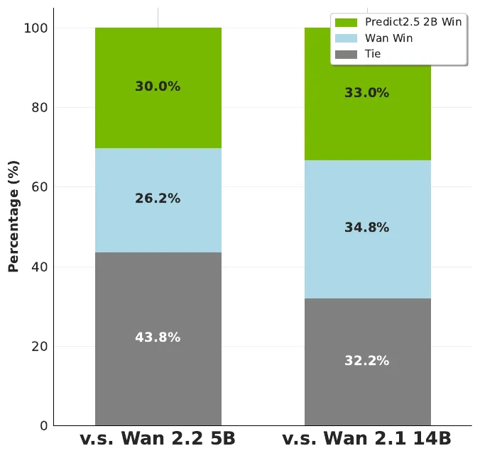
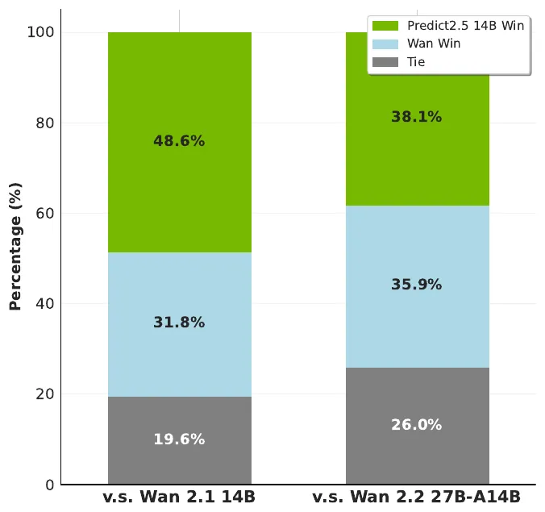
“比 Wan2.2-5B、Wan2.1-14B 小 60.0% 和 85.7%”是按标称 2 / 5 / 14 算的：1 − 2/5 = 60.0%，1 − 2/14 = 85.7%。按精确参数（2B 为 2.059B，含 1.03 亿的文本投影；Wan2.2-TI2V-5B 为 4.9998B，Wan2.1-14B 为 14.288B，见 Wan 页读者注 6）是 58.8% 和 85.6%，差别不大。“14B 只有 Wan2.2-27B-A14B 的一半参数”是总参数比（14.37 / 28.58 ≈ 50%）；但 A14B 每一步只激活一个 14.29B 的专家，所以每步计算量和 Cosmos 14B（14.37B）几乎一样。人工评测的平局比例很高（对 Wan2.2-5B 是 43.8%），“更受偏好”是 30.0 对 26.2 的小幅领先。
定性样例。图 8 是 2B 后训练模型在 PAI-Bench 上的样例：驾驶、工业、机器人和人体运动。
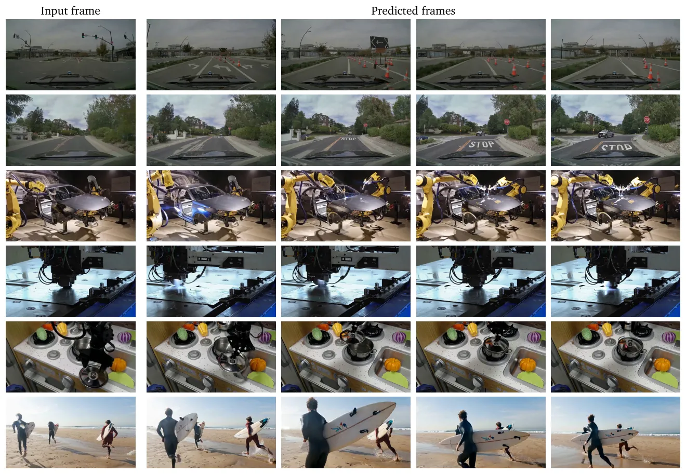
六个下游应用：Transfer2.5（6.1）；用它给机器人策略做真实到真实的数据增强（6.2）；驾驶的多视角世界模型和场景图控制（6.3）；相机可控的多视角生成（6.4）；VLA 合成数据（6.5）；动作条件的世界模型（6.6）。
结论：在 Predict2.5-2B 上加 ControlNet 式的控制分支，输入可以是边缘、模糊视频、分割图、深度图（来自 IsaacSim 之类的仿真器或真实视频）。整体沿用 Transfer1-7B 的设计，唯一结构改动是控制块的位置：Transfer1 把 4 个控制块连续放在主干开头，Transfer2.5 每隔 7 个主干块插一个，同样 4 个，条件信息逐步注入。
训练数据。从预训练视频里挑物理 AI 领域（驾驶、机器人、智能空间、物理）：用 Video Depth Anything 给 1000 万段做深度，SAMv2 给 300 万段做分割，沿用 Transfer1 的流程做 1400 万段边缘和模糊。每种模态的控制分支单独训练 10 万步，有效 batch 64，其余超参同 Predict2.5-2B。
| 模型 | 模糊 SSIM ↑ | 边缘 F1 ↑ | 深度 si-RMSE ↓ | 分割 mIoU ↑ | 质量分 ↑ |
|---|---|---|---|---|---|
| Transfer1-7B [Blur] | 0.89 | 0.20 | 0.66 | 0.73 | 6.56 |
| Transfer1-7B [Edge] | 0.77 | 0.38 | 0.85 | 0.73 | 6.76 |
| Transfer1-7B [Depth] | 0.67 | 0.15 | 0.76 | 0.71 | 6.89 |
| Transfer1-7B [Seg] | 0.62 | 0.11 | 1.13 | 0.70 | 6.02 |
| Transfer1-7B 均匀权重 | 0.82 | 0.26 | 0.70 | 0.74 | 9.24 |
| Transfer2.5-2B [Blur] | 0.90 | 0.26 | 0.59 | 0.75 | 9.75 |
| Transfer2.5-2B [Edge] | 0.79 | 0.49 | 0.76 | 0.75 | 8.73 |
| Transfer2.5-2B [Depth] | 0.71 | 0.19 | 0.70 | 0.73 | 8.85 |
| Transfer2.5-2B [Seg] | 0.68 | 0.14 | 1.02 | 0.71 | 8.81 |
| Transfer2.5-2B 均匀权重 | 0.87 | 0.41 | 0.67 | 0.76 | 9.31 |
表 12 · PAI-Bench-Transfer（600 段视频）上的控制对齐和质量。单模态模型只用一种控制；“均匀权重”四种控制各占 0.25。
cosmos-transfer2.5 的 minimal_v4_lvg_dit_control_vace.py 第 593 行：control_layers = [i for i in range(0, num_blocks, vace_block_every_n)]，配置 vace_block_every_n = 7，28 层得到 [0, 7, 14, 21] 四个位置（读者注 4）。控制块是一个 DiT 块加前后两个零初始化的线性层（before_proj、after_proj，第 283-294 行），输出按 control_context_scale 加回主干对应块（第 233 行）。HF 上 Transfer2.5-2B 单模态权重 4,716,357,097 字节，约 23.6 亿参数，比 Predict2.5-2B 多约 3 亿，即 4 个控制块的量级。“小 3.5 倍”是标称的 7B / 2B。表 12 逐行和同配置的 Transfer1 比（Blur 对 Blur、Edge 对 Edge……），25 个格子全部是 Transfer2.5 更好或相等；质量分在单模态上高 2.0 到 3.2 分，均匀权重只高 0.07（9.31 对 9.24）。另一个看点：深度对齐最好的不是深度控制模型（0.70），而是模糊控制模型（Transfer2.5 0.59、Transfer1 0.66），大概因为模糊视频本身保留了整体几何（我的推断）。
两个维度（控制跟随、整体质量）上 Transfer2.5-2B 都超过 Transfer1-7B。作者归因于更强的基础模型和更贴近物理 AI 的训练数据。
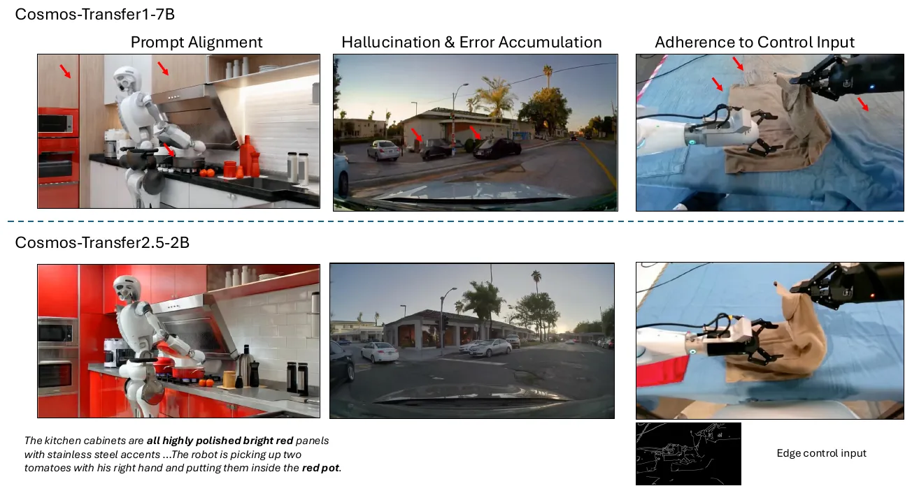
DiT 上下文有限，长视频只能一段一段自回归生成，误差会累积。作者挑了 17 段 30 到 120 秒的视频，提出“平均相对归一化 DOVER 分数”（RNDS）：
\(i\) 是段号，DOVER 是视频质量评分，GT 是真实视频对应段。曲线从 (1, 1) 出发，再对所有视频取平均。
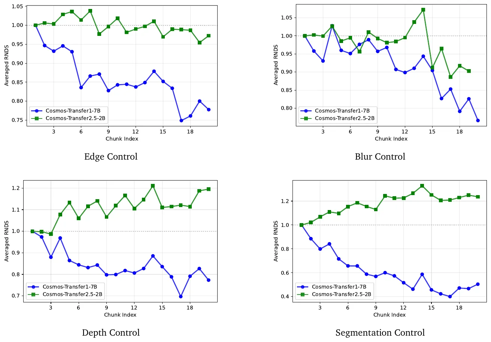
我用 pdftocairo -svg 导出第 21 页，按每个小图的纵轴刻度标定（每条曲线的第 1 点都落在 1.0 刻度上，可作校验），读出每条曲线 20 个点（重画读数，不是原文给的数）：
| 控制 | T1 最后一段 | T1 最低 | T2.5 最后一段 | T2.5 范围 | T2.5 平均 |
|---|---|---|---|---|---|
| 边缘 | 0.778 | 0.749 | 0.972 | 0.954–1.038 | 0.998 |
| 模糊 | 0.766 | 0.766 | 0.903（第 19 段） | 0.886–1.072 | 0.980 |
| 深度 | 0.773 | 0.697 | 1.195 | 0.987–1.211 | 1.109 |
| 分割 | 0.504 | 0.401 | 1.236 | 1.000–1.328 | 1.180 |
除模糊控制的绿线只画到第 19 段外，其余曲线都到第 20 段。两点读后感：(1) 深度和分割下 Transfer2.5 的 RNDS 升到 1.2 以上，按式 (5) 意思是“后面的段相对真值的 DOVER 比第 1 段还好”，这不代表画质在提高，更可能是第 1 段相对真值偏低、或真值视频本身后段 DOVER 下降；RNDS 只衡量相对趋势。(2) 20 段 × 93 帧（段间若重叠 1 帧则 20 × 92 + 1 = 1,841 帧）在 16 fps 下约 115 秒，而评测视频只有 30 到 120 秒，短视频到不了第 20 段；所以越往后平均的视频越少，后段曲线噪声更大（我的推断，论文没说怎样处理长度不齐）。
问题：能不能用 Transfer2.5 生成视觉增强数据，让策略在没见过的视觉场景下也能工作？
结论：100 条真机示教，每条用 Transfer2.5 生成 5 个视觉变体，训出的策略在 10 种测试场景里 24/30 成功；只用原始数据 1/30，用常规图像增强 5/30。
半人形平台：两条 7 自由度 Kinova Gen3 手臂，Robotiq 2F-140 夹爪，头部一台 RealSense D455 做第一人称观测，底座固定。遥操作用 Meta Quest 2 手柄跟踪左右末端的 6D 位姿，经 cuRobo 的 GPU MPC 转成关节目标，由关节阻抗控制器执行。
任务：桌上随机放一个苹果和一个碗；一只手拿苹果、另一只手拿碗，把苹果放进碗里，再把碗放回桌上。只变苹果和碗的位置，物体（灰色苹果和碗）、桌面、背景都不变。采 100 条示教，训练 UNet 结构的 Diffusion Policy：输入单张图（小 ViT 编码）和夹爪关节状态，输出 8 步动作块（10 FPS，两臂的末端目标位姿和夹爪指令）。
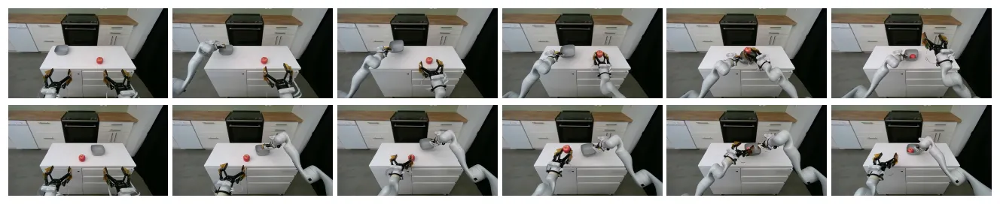
全图用边缘控制，模糊控制只作用在机器人像素上（用 Grounding DINO + SAMv2 分割出机器人）。边缘阈值中等，模糊阈值很低，CFG 3，其他默认。提示词流程：先让 VLM 给示例视频写描述，再反复用 Transfer2.5 生成、检查是否还像原视频来修描述；然后把描述做成模板，标出可变部分（桌面、苹果颜色、碗颜色、光照句、背景句），让 LLM 生成候选替换。每条原始示教随机生成 5 个变体，动作和关节状态不变，只换图像。
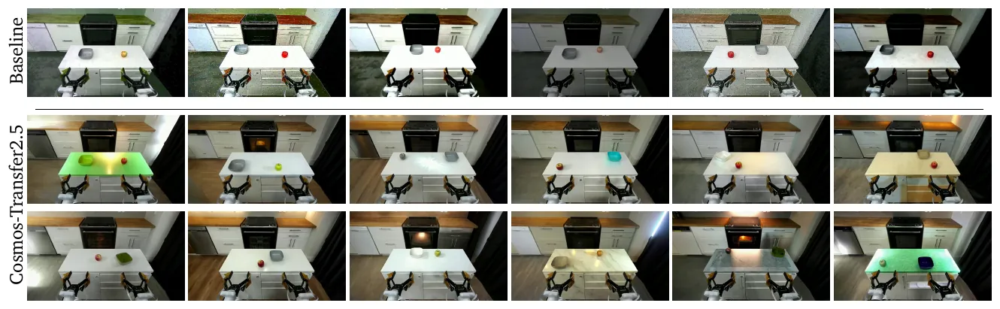
除了和训练一致的基础场景，还测 9 种新场景：(1) 苹果换成紫色山竹；(2) 灰碗换成橙碗；(3) 米色桌布；(4) 黑色桌布；(5) 左侧加聚光灯；(6) 桌上放干扰物；(7) 左边背景柜子换成黑色；(8) 打开背景的抽屉和烤箱门；(9) 前三项组合。作者说前五种可能落在提示词增强的范围内，(6) 到 (8) 是明显的分布外，(9) 最难。每个场景 3 次，物体位置和环境固定。
| 策略 | 基础 | 山竹 | 橙碗 | 米色桌 | 黑桌 | 开灯 | 干扰物 | 黑柜 | 开抽屉 | 组合 | 合计 |
|---|---|---|---|---|---|---|---|---|---|---|---|
| Base（只用 100 条示教） | 1/3 | 0/3 | 0/3 | 0/3 | 0/3 | 0/3 | 0/3 | 0/3 | 0/3 | 0/3 | 1/30 |
| Baseline（常规图像增强） | 3/3 | 0/3 | 2/3 | 0/3 | 0/3 | 0/3 | 0/3 | 0/3 | 0/3 | 0/3 | 5/30 |
| Proposed（Transfer2.5 增强） | 3/3 | 3/3 | 3/3 | 1/3 | 1/3 | 2/3 | 3/3 | 2/3 | 3/3 | 3/3 | 24/30 |
表 13 · 真机测试。
Proposed 逐项相加 3 + 3 + 3 + 1 + 1 + 2 + 3 + 2 + 3 + 3 = 24，对上；Baseline 3 + 2 = 5。正文说“常规增强只在一种情况下成功”，指 9 个新场景里只有橙碗（2/3），基础场景不算。Base 在训练场景本身也只有 1/3，作者解释为人眼察觉不到的场景细微变化。每格只有 3 次试验，24/30 的 95% 置信区间大约是 63% 到 90%（Wilson 区间，我算的），而 Proposed 在两种桌布上只有 1/3，组合场景反倒是 3/3，单格之间的差别不宜细读。
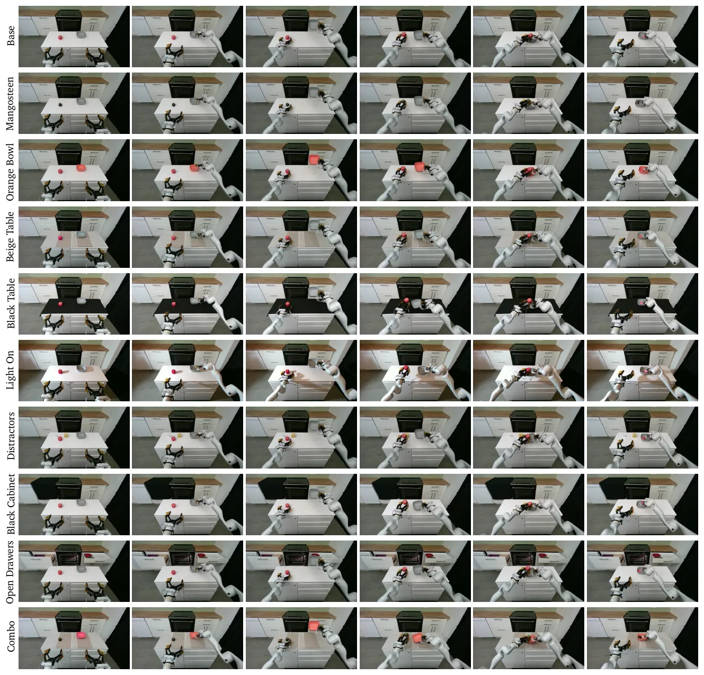
先把 Predict2.5-2B 从单视角扩展成多视角（Predict2.5-2B/auto/multiview），再像 6.1 那样加控制分支，得到 Transfer2.5-2B/auto/multiview。
为了在 720p 下生成多个视角，把多个视角沿隐变量的时间维拼接，当成连续的帧。为放进显存（同时用 FSDP 和上下文并行），每个视角的隐帧数降到 8，最多 7 个视角。每个视角由 tokenizer 单独编码、解码；编码后在通道维拼一个 7 维的可学习视角嵌入，再进 DiT。RoPE 虽然整体拼在时间维上，但按视角分别构造。每个视角可以用一帧或多帧做条件；Transfer 版每个视角还可以有自己的控制信号。
| 模型 | FVD StyleGAN ↓ | FVD I3D ↓ | FID ↓ | TSE ↓ | CSE ↓ |
|---|---|---|---|---|---|
| Predict2.5-2B/auto/mv | 23.060 | 25.308 | 12.095 | 0.948 | 1.903 |
| Predict1-7B-Sample-AV | 63.685 | 69.613 | 25.341 | 0.930 | 2.631 |
| Transfer2.5-2B/auto/multiview | 24.222 | 25.692 | 20.022 | 1.246 | 2.310 |
| Transfer1-7B-Sample-AV | 56.606 | 60.660 | 22.633 | 1.017 | 1.835 |
| 真实视频（参考） | - | - | - | 1.193 | 1.832 |
表 14 · RDS-HQ-HL 上多视角视频的画质（FVD、FID）和多视角一致性（时间 / 跨相机 Sampson 误差 TSE / CSE）。
| 模型 | LET-AP ↑ | LET-APL ↑ | LET-APH ↑ | 车道 F1 ↑ | 远处 x 误差 ↓ | 类别准确率 ↑ |
|---|---|---|---|---|---|---|
| Transfer2.5-2B/auto/multiview | 0.394 | 0.254 | 0.383 | 0.637 | 0.487 | 0.904 |
| Transfer1-7B-Sample-AV | 0.243 | 0.154 | 0.236 | 0.604 | 0.524 | 0.899 |
| 真实视频（参考） | 0.476 | 0.319 | 0.462 | 0.637 | 0.480 | 0.905 |
表 15 · 在生成视频上跑 3D 框检测（BEVFormer）和车道检测（LATR），和真值标注比。
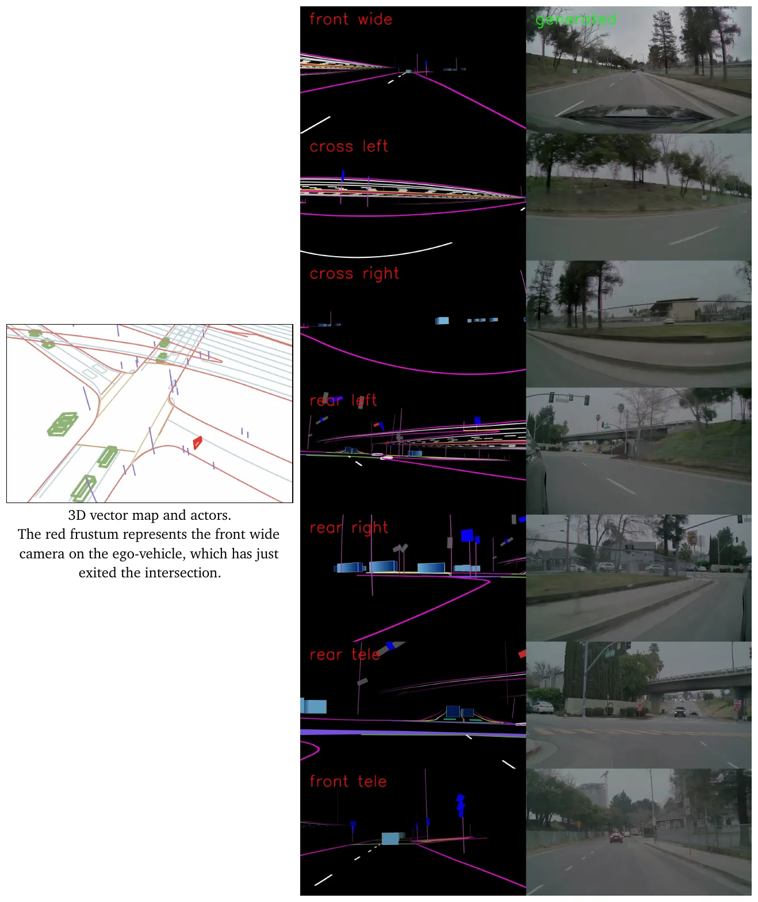
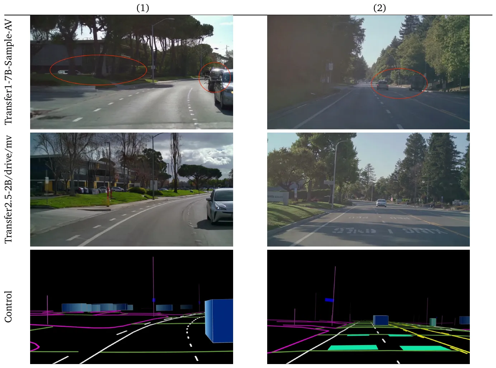
Predict2.5-2B/auto/multiview：150 万段多视角片段，每段 20 秒、7 路同步相机、30 FPS（前广角、前长焦、前左、前右、后左、后右、后长焦）；每 150 帧用 Qwen2.5-7B-Instruct 写短中长三种描述。Transfer 版：把高清地图和动态物体投影到 7 个相机上作控制输入，称为“世界场景图”：地图元素（车道线、杆、路沿、红绿灯等）加上标明车辆和行人位置的动态 3D 框，按类型着色、按运动方向明暗。控制网络用 RDS-HQ（论文）训练：14 万段 20 秒的多视角驾驶场景和高清地图。相比 Transfer1 用的控制视频，新的场景图有细分的车道线类型（虚线、点线、双黄线），框会考虑遮挡和朝向。
Predict2.5-2B/auto/multiview 在 150 万段上训 2 个 epoch，全局 batch 64，上下文并行 8；30 FPS 下一次去噪 203 帧（每视角 29 帧）。Transfer 版把视频和控制降到 10 FPS。评测用 RDS-HQ 里另外 1000 段带高清地图和人工标注车道、框的片段（和训练集不重叠）。表 14：FVD / FID 最多提升约 2.3 倍，时间和跨相机 Sampson 误差仍有竞争力。表 15：检测指标最多提升约 60%。
结论：Transfer2.5-2B/robot/multiview 给定一个参考视角的视频和 N 条目标相机轨迹（内外参），生成 N 段对应视角的视频；比如把人形机器人的头部视角映射到两只手的腕部视角，补出头部看不到的区域。
| 模型 | 相机视角数 | 条件 | 类型 | 分辨率 |
|---|---|---|---|---|
| Cosmos-Predict1 | 1 | 文本 + 图像 | 预测未来 | 720p |
| Cosmos-Predict2.5 | 3 | 文本 + 视频 | 视频重渲染 | 720p |
表 16 · 相机控制：Predict2.5 和 Predict1 对比。
结构。源视频和目标视频都 tokenize 后沿时间维拼接。VAE 时间压缩 4 倍，所以相机参数也每 4 帧取一次，和隐帧对齐。目标相机表示成 Plücker 射线图（每个像素一个 6D 射线），patch 化后经一个相机投影层对齐到隐变量维度，在自注意力之前加到视频 token 上。训练时只训自注意力层和相机投影层，其余冻结。
数据。AgiBot：约 100 万条里抽 145,820 条，每条 3 个视角，带精确相机位姿；MultiCamVideo（论文）：13.6 万条合成的人体运动，动态相机；SynCamVideo（论文）：3.4 万条，内容类似但相机固定在新视角。
两个变体（都 720p，用上下文并行解决显存）：multiview-agibot 在 AgiBot 上微调，输入头部视频，生成左右腕部视频（图 16）；multiview 在 MultiCamVideo 和 SynCamVideo 上微调，输入第三人称视频，生成两段做基本相机变换的视频（左右转、弧线、推拉、方位角、仰角、距离，焦距也可变，图 17）。
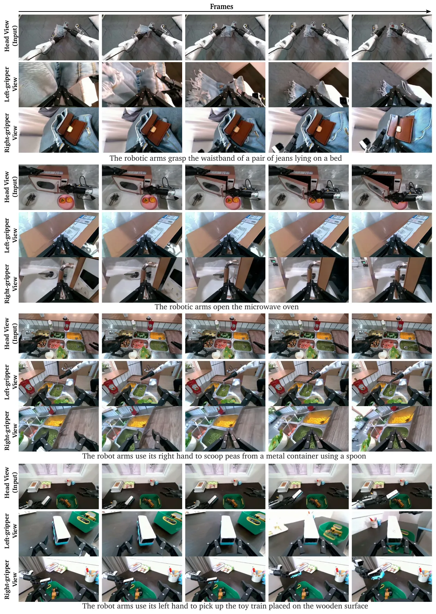
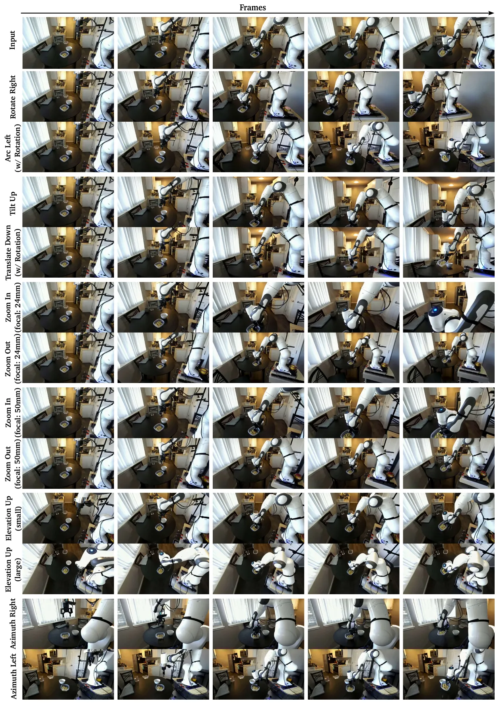
评测。两个维度：相机轨迹误差（用 ViPE 从生成视频估相机位姿，和真值比旋转、平移）；跨视角一致性（生成视角两两之间的 Sampson 误差）。80 段验证视频 × 16 条相机轨迹。基线是只生成一个目标视角的 singleview 版。
| 模型 | 平移误差 ↓ | 旋转误差（rad）↓ | Sampson 误差（px）↓ |
|---|---|---|---|
| Transfer2.5-2B/robot/singleview | 0.08 | 0.19 | 26.61 |
| Transfer2.5-2B/robot/multiview | 0.08 | 0.20 | 19.73 |
表 17 · 多相机视频生成。多视角版一致性好（Sampson 误差低 26%），相机精度相当。
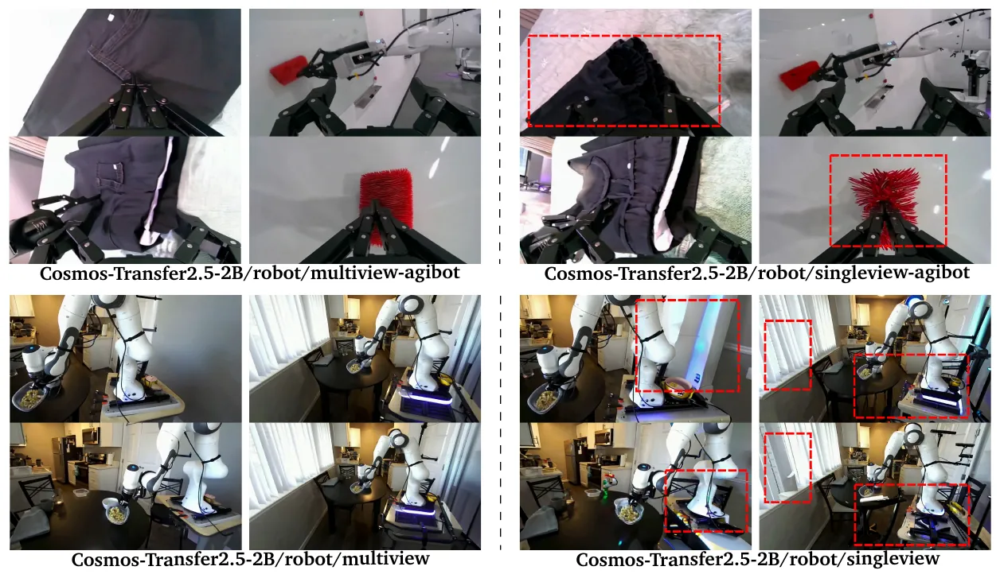
另外还有 Predict2.5-2B/robot/multiview-agibot：输入三张单帧图（两个夹爪视角和头部视角）和各自的相机轨迹，生成三段操作视频，结构同上，在 AgiBot 上训练，用来给策略造数据（图 19）。
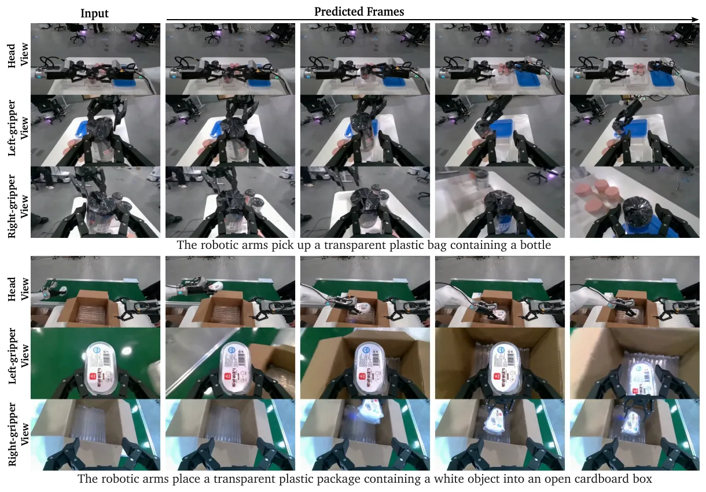
在真实示教视频上后训练后，Predict2.5 能按没见过的语言指令生成机器人执行视频；再用潜动作模型或逆动力学模型（IDM）从视频里提取伪动作，就得到“视觉 + 语言 + 动作”的样本，用来扩充 VLA 训练数据（DreamGen 的流程）。作者后训练 Predict2.5-14B，在 DreamGen Bench（论文）上评测：看生成视频是否按指令完成涉及新物体、新行为、新环境的任务，由 Qwen2.5-VL 和 GPT-4o 自动打分。
| 模型 | 物体 | 行为 | 环境 | |||
|---|---|---|---|---|---|---|
| GPT | Qwen | GPT | Qwen | GPT | Qwen | |
| Hunyuan | 38.0 | 26.0 | 38.3 | 10.6 | 27.6 | 27.6 |
| CogVideoX | 72.0 | 38.0 | 44.0 | 28.0 | 55.2 | 41.4 |
| WAN2.1 | 72.0 | 58.0 | 72.3 | 55.3 | 48.3 | 65.5 |
| Cosmos-Predict2-14B/robot/gr00tdream-gr1 | 90.0 | 62.0 | 59.6 | 61.7 | 69.0 | 65.5 |
| Cosmos-Predict2.5-14B/robot/gr00tdream-gr1 | 91.8 | 69.4 | 70.2 | 59.6 | 69.0 | 69.0 |
表 18 · DreamGen Bench 上 GR1 人形的指令跟随（全部是 SFT 模型）。Cosmos-Predict2-14B 是早一版，文本嵌入没用 Reason1。
正文说 Predict2.5-14B “指令跟随得分最高，尤其物体和环境泛化”。逐列看：物体两列最高（91.8、69.4）；环境 GPT 69.0 和 Predict2 并列，环境 Qwen 69.0 最高；行为两列都不是最高：GPT 70.2 低于 WAN2.1 的 72.3，Qwen 59.6 低于 Predict2 的 61.7。六列平均：Predict2.5 71.5，Predict2 68.0，WAN2.1 61.9，CogVideoX 46.4，Hunyuan 28.0。整体最好的结论成立，“尤其物体和环境”的措辞也准确，只是行为维度没领先。GR1 数据和 RoboCasa-GR1 基准的来历见 GR00T 页。
结论：Predict2.5-2B/robot/action-cond 输入一张条件图和一串机器人动作，生成跟随动作的未来帧；长轨迹按块自回归生成，每块以上一块最后一帧为条件。动作是预训练里没有的模态，所以加了一个动作嵌入 MLP，把动作映射成张量加到 DiT 的时间嵌入上，而不是作为 token 输入。
实验。公开 Bridge 数据（按 IRASim 的设置）：约 2 万条厨房场景第三人称视频，320 × 256，5 FPS；每帧动作是夹爪坐标系下的 7 维向量 (Δx, Δy, Δz, Δθr, Δθp, Δθy, 夹爪宽度)。官方测试集随机抽 100 条生成并和真值比，基线是 Predict1-7B-Video2World-Sample-ActionCond。
| 方法 | PSNR ↑ | SSIM ↑ | 隐空间 L2 ↓ | FVD ↓ |
|---|---|---|---|---|
| Predict1-7B-Video2World-Sample-ActionCond | 21.14 | 0.82 | 0.32 | 190 |
| Predict2.5-2B/robot/action-cond（时间嵌入，采用） | 24.95 | 0.85 | 0.28 | 146 |
| 同上，交叉注意力注入 | 24.41 | 0.84 | 0.28 | 159 |
| 同上，通道拼接 | 23.11 | 0.78 | 0.35 | 267 |
表 19、表 20 · Bridge 上的动作条件视频预测和注入方式消融（两张表合并）。
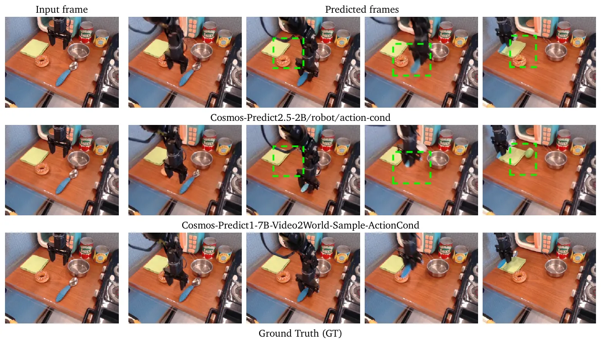
示例配置 cosmos_predict2/experiments/base/action.py 用 ActionChunkConditionedMinimalV1LVGDiT：action_dim = 7，每段 12 个动作，state_t = 1 + 12/4 = 4 个隐帧（1 帧条件 + 12 帧预测 = 13 帧），图像 256 × 320，batch 8，lr 3.2e-4，wd 0.1。网络（action/networks/action_conditioned_minimal_v1_lvg_dit.py 第 189-233 行定义，第 266-309 行前向）按每个隐帧对应的 4 个动作拼成 7 × 4 = 28 维，经两个 MLP：28 → 8192 → 2048 加到时间嵌入，28 → 8192 → 6144 加到 AdaLN-LoRA 的输入（第 308-309 行）；条件帧那一个隐帧补零。两个 MLP 合计 2 × (28 × 8192 + 8192) + (8192 × 2048 + 2048) + (8192 × 6144 + 6144) = 67,592,192 个参数。HF 上 robot/action-cond 权重 4,253,761,926 字节，减去基础模型 4,118,575,006 字节后除以 2 是 67,593,460，只差 1,268，对上。也就是说动作同时调制每一块的 scale、shift、gate，这正是“加到时间嵌入”比交叉注意力、通道拼接好的一个可能原因（我的推断）。
世界模型。两条主线：在抽象隐空间里预测（World Models、Dreamer、V-JEPA 2 等）；直接在像素空间做高保真视频预测（Sora、Cosmos、Genie 3），本文属于后者，好处是保留丰富信息、适合给策略造合成数据、也方便加相机、动作、场景图等控制。第三条新方向是原生 3D / 4D 表示（神经场景表示或物理仿真器）。
视频生成。闭源的 Sora、可灵、Gen-3、海螺、MovieGen、Seedance、Veo、Waver 很强但不能微调；开源的 Wan、LTX、Hunyuan 透明可用，但大多面向通用内容创作，缺物理 AI 需要的细粒度控制。Predict1 是第一个面向物理 AI 的开源视频模型，本文在它基础上用领域数据训练并接入 Reason1 文本编码。
物理 AI 世界基础模型。Predict1 / Transfer1 推动了通用世界生成和物理、具身领域的评测基准，被后训练出相机控制、轨迹控制、重打光等能力，也被用作机器人策略（DreamGen、GR00T）和自动驾驶的数据引擎。
Predict2.5 和 Transfer2.5 靠大规模精选数据、流匹配、更好的文本嵌入、领域后训练和 RL，在物理 AI 基准上领先，并在机器人和自动驾驶里验证了用处。作者希望通过开放模型和代码，让 Cosmos 成为“先仿真”的物理 AI 平台。
A.1 列 88 位贡献者，A.2 列致谢名单，都按字母顺序，没有分工说明。
代码是 nvidia-cosmos/cosmos-predict2.5 提交 a2c298b（2026-06-08，Apache-2.0）。OpenWAM 的子模块钉的是更早的 441b897，我没有单独检出那个版本。下表的“代码”列指发布的 2B 权重对应的实验配置（model_2B_reason_1p1_rectified_flow.py、specialized_model/SFT_2B_RF.py）和网络定义。
| 项目 | 论文 | 代码 / 权重 |
|---|---|---|
| 2B 结构 | 32 层，宽 2048，FFN 8192，16 × 128 | 28 层（num_blocks = 28），其余一致；2,059,174,912 个参数，和权重文件大小一致（读者注 4） |
| 14B 结构 | 36 层，宽 5120，40 × 128 | 一致；14,368,047,104 个参数 |
| 位置编码 | 去掉绝对位置编码，只留 3D RoPE | extra_per_block_abs_pos_emb = False（7B 的 Predict1 配置是 True）；RoPE 头维 128 按高 42、宽 42、时间 44 分；高宽外推比 3.0 |
| VAE | Wan2.1 VAE，4 × 8 × 8 | wan2pt1_tokenizer；HF 上 tokenizer.pth 507,609,880 字节，和 Wan2.1 的 Wan2.1_VAE.pth 同样大小；检查点注册表登记名就是 “Wan2.1/vae” |
| 文本 | Reason1，多块拼接 → 1024 | Reason1(.1)-7B，28 层全拼 100,352 维 → Linear + GELU → 1024；512 token（读者注 5） |
| 条件 | 帧替换 + 掩码 | 输入 16 + 1（条件掩码）+ 1（padding 掩码）通道；条件帧处输出替换成真值速度 |
| 时间步 | logit-normal + shift，β 到 5；高噪声 5% | shift = 5，logitnormal，均匀损失权重；高噪声分支在公开代码里会报错（读者注 3）；timestep_scale = 0.001 |
| 优化 | lr 3e-5，wd 1e-3，预热 2000，线性衰减 | 720p 段预热 100、因子 0.99 → 0.4；独立训练配置预热 2000（读者注 8）；梯度裁剪 0.1 |
| 后训练权重 | 合并模型 + RL 的 EMA | 实验 …rf_with_edm_ckpt：条件帧时间步 0.1，推理用 Karras 式 σ 网格；权重来自 GRPO 第 288 步。14B 是另一条 GRPO（steps20、every2、lr 3e-6）第 128 步 |
| 推理默认 | 未给 | config.py：35 步（FlowUniPC），CFG 7，输出 77 帧，shift 5，固定的英文负提示（“The video captures a series of frames showing ugly scenes…”） |
| Transfer2.5 | 每 7 块一个控制块，共 4 个 | control_layers [0, 7, 14, 21]，零初始化投影（读者注 13） |
| 动作条件 | 动作 MLP 加到时间嵌入 | 7 × 4 = 28 维 → 两个 MLP 加到时间嵌入和 AdaLN-LoRA（读者注 18） |
训练是 93 帧（24 个隐帧），推理命令行默认输出 77 帧（20 个隐帧，config.py 第 447 行），默认 35 步、CFG 7（第 449、473 行；同文件的通用参数默认 CFG 3，第 304 行）。后训练实验打开了 use_kerras_sigma_at_inference（SFT_2B_RF.py 第 767 行），推理的 σ 网格按 EDM 的 Karras 式生成（σ 从 200 到 0.01，ρ = 7，再换算成 σ / (1 + σ)，即从 0.995 到 0.0099），这时 shift 参数不起作用（models/fm_solvers_unipc.py 第 170-189 行）。论文没有写推理设置。长视频用 enable_autoregressive，默认每块 77 帧、块间重叠 1 帧。
OpenWAM 是一个世界-动作模型（WAM）框架：视频骨干预测未来画面，动作骨干（ActionDiT）和它逐层做联合注意力来出动作。它支持五种视频骨干，Cosmos-Predict2.5-2B 是其中之一。OpenWAM 仓库（提交 1dcaeea，只读）里对应的是 configs/model/video_backbone/cosmos_predict25_2b.yaml 和 openwam/model/video_backbone/cosmos_predict25_backbone.py 加 cosmos_predict25/ 目录。
§4.1.1 的结果。OpenWAM §4.1.1 在 RoboTwin 2.0（论文）Full 上比较四个预训练视频骨干（双系统、联合自注意力，视频模块拷贝预训练权重）：Wan2.1-VACE-1.3B 90.14，Cosmos-Predict2.5-2B 91.64，Wan2.2-TI2V-5B 92.39，Wan2.1-I2V-14B 93.79。Cosmos 2B 比 TI2V-5B 低 0.75 点，参数是它的 2.06 / 5.00 = 41%。OpenWAM 后面的实验都用 TI2V-5B（见 Wan 页）。
| 项目 | Cosmos-Predict2.5-2B（OpenWAM 里） | Wan2.2-TI2V-5B（OpenWAM 默认） |
|---|---|---|
| 权重 | model_variant: base/post-trained，glob <uuid>_ema_bf16.pt；下载脚本只取 base/post-trained/* 和 tokenizer.pth（约 4.6 GB） | HF Wan2.2-TI2V-5B |
| VAE | vae: wan2pt1（注释写“stride 4x8x8, z_dim=16”），冻结 | Wan2.2-VAE，4 × 16 × 16，48 通道 |
| 时间压缩 | 4 倍，首帧单独（_COSMOS25_TEMPORAL_COMPRESSION = 4，_CAUSAL_TEMPORAL = True） | 同样 4 倍，首帧单独 |
| patch | (1, 2, 2)，每个 token 覆盖 4 帧 × 16 × 16 像素 | (1, 2, 2)，每个 token 覆盖 4 帧 × 32 × 32 像素 |
| DiT | 28 层，宽 2048，16 头 × 128 | 30 层，宽 3072，24 头 × 128 |
| 文本 | text_encoder_path 指向 Cosmos-Reason1-7B（约 16.6 GB），训练时在线跑、冻结；上下文 1024 维（text_dim 自动推出） | umT5，4096 维 |
| shift | shift_video: 5.0，注释“flow-matching α-shift for the video scheduler (train + deploy single source of truth)” | 5 |
| 首帧条件 | 条件掩码通道第 0 个隐帧置 1，该帧时间步置 0（dit_forward.py 第 94-99 行） | 首帧替换，t = 0 |
| 动作骨干 | ActionDiT 宽 1024，层数跟视频骨干（28）；联合自注意力要求每层 16 × 128 对齐 | 层数 30 |
token 数。OpenWAM 的画布是 384 × 320，9 帧观测编码成 3 个隐帧。Wan2.1 VAE 下一个隐帧是 48 × 40，patch 后 24 × 20 = 480 个 token，3 个隐帧 1,440 个；Wan2.2-VAE 下是 12 × 10 = 120 个、共 360 个。也就是说 Cosmos 2B 每层更窄（2048 对 3072）、少两层，但视频 token 是 TI2V-5B 的 4 倍。
上游。发布的 2B 权重对应的流匹配实验在网络里设了 timestep_scale = 0.001（model_2B_reason_1p1_rectified_flow.py 第 318 行；14B、动作条件、多视角的流匹配配置也都是 0.001）。训练和推理时传给网络的时间步是 σ × 1000（0 到 1000），MinimalV1LVGDiT.forward 先乘 0.001，所以时间嵌入的正弦编码看到的是 0 到 1。
OpenWAM。cosmos_predict25/pipeline_builder.py 第 44-71 行的 _COSMOS25_2B_NET_KWARGS 里没有 timestep_scale，构建 MinimalV1LVGDiT 时用默认值 1.0（minimal_v1_lvg_dit.py 第 25 行）。而 OpenWAM 的调度器给出的时间步也是 σ × 1000（scheduler.py 第 65 行），dit_forward.py 第 68-72 行乘上 net.timestep_scale（= 1.0）后直接送进时间嵌入。按代码读，预训练时嵌入看到 0 到 1，OpenWAM 里看到 0 到 1000，差 1000 倍。OpenWAM 会微调整个 DiT，这个偏差可能被训练吸收，但起点上预训练的时间条件是错位的。
建议。复现时在 prepare_block_loop 里打印一次 net.timestep_scale 和送进 t_embedder 的数值范围；若确认是 1.0，可在 _COSMOS25_2B_NET_KWARGS 加 timestep_scale=0.001 对比。OpenWAM 论文 §4.1.1 的 91.64 是用哪个版本的代码跑的，不知道，未核实。
OpenWAM 的 base.py 第 1139-1147 行在 1000 个已经 shift 过的 σ 里均匀抽下标；上游是 sigmoid(randn) 再 shift。两者中位数都是 0.833（shift 5），但尾部不同：OpenWAM 下 \(\sigma\ge0.98\) 要求均匀的 \(u\ge0.98/(5-4\times0.98)=0.907\)，概率 9.3%；上游 logit-normal 只有 1.1%（读者注 3）。OpenWAM 抽到极高噪声的比例约是上游的 8 倍，抽到 \(\sigma\le0.2\)（\(u\le0.048\)）的比例是 4.8%，上游约 0.14%。损失权重两边都是均匀的（OpenWAM scheduler.py 第 73-88 行的注释也说明了对齐上游），这一点一致。scheduler.py 注释提到的 “rectified_flow_shift5_high_sigma” 检查点家族名，我在上游代码里没找到。
text_encoder.py 用同一句系统提示、补到 512 token、取 hidden_states[1:] 的 28 层逐层归一化后拼 100,352 维，再用 DiT 自带的 crossattn_proj 投到 1024，和读者注 5 一致。它还在 _validate_geometry 里强制检查 28 层、3584 宽，只认 Reason1-7B / Qwen2.5-VL-7B。reason1 子模块，跟着 OpenWAM 的统一 safetensors 一起保存（component_specs.py 的说明）；部署时不需要另外的 Reason1 路径，但每个检查点都多出约 16 GB。pipeline_builder.py 遇到其他名字直接报错（“14B config is registered but not wired up yet”）。只共用 VAE。Predict2.5 的视觉 tokenizer 就是 Wan2.1 的 VAE（同样的 4 × 8 × 8、16 通道，HF 上的 tokenizer.pth 和 Wan2.1 的 VAE 文件一样大，507,609,880 字节），所以 Wan 页 §4.1 讲的因果分块、首帧单独、特征缓存都适用。DiT 是 Cosmos 自己的，和 Wan 的 DiT 不同：
| Cosmos-Predict2.5-2B | Wan2.1-1.3B | Wan2.2-TI2V-5B | |
|---|---|---|---|
| VAE | Wan2.1 VAE（4 × 8 × 8，16 通道） | Wan2.1 VAE | Wan2.2-VAE（4 × 16 × 16，48 通道） |
| DiT 层 × 宽 | 28 × 2048，FFN 8192 | 30 × 1536，FFN 8960 | 30 × 3072，FFN 14336 |
| 时间调制 | 每块三组 AdaLN-LoRA（d → 256 → 3d），共享的时间 MLP 另给一个 3d 的 LoRA 偏置 | 共享 MLP 出 6d，每块只学 (6, d) 偏置 | 同 Wan2.1，但每个 token 一个 t |
| 交叉注意力 | 受调制（scale、shift、gate） | 不受调制 | 不受调制 |
| 文本 | Reason1-7B 28 层拼接 → 1024 | umT5-XXL，4096 | umT5-XXL，4096 |
| 条件方式 | 帧替换 + 条件掩码通道 | （I2V 版用 36 通道拼接） | 首帧替换 + 该帧 t = 0 |
| 参数 | 2,059,174,912 | 1,418,996,800 | 4,999,787,712 |
另外，cosmos-predict2.5 的代码里还登记了 Wan2.1 的 1.3B 和 14B 网络（configs/video2world/defaults/net.py 的 WAN2PT1_1PT3B、WAN2PT1_14B），说明 NVIDIA 的训练框架也能训 Wan 结构；但发布的 Predict2.5 用的是自家的 MinimalV1LVGDiT。表 10、11 和图 6、7 的 Wan 都是作为外部对照模型。
以下各条都是本页加的核算或对照，不属于论文内容。点编号跳到对应位置。
和用户手上数字的关系。这一页不涉及 LIBERO。和 OpenWAM 相关、需要复现时注意的是读者注 20（时间嵌入尺度可能错位）和 21（时间步分布和上游不同）；OpenWAM 页里 Cosmos 2B 的 91.64 本页照录，没有发现矛盾。
论文没写、我也没找到的：RL 的训练代码和完整超参、模型合并的最终权重、14B 的 FFN 实际是否 20,480（代码里 mlp_ratio 4 × 5120 = 20,480，一致）以外的 14B 训练细节、各领域 SFT 的具体数据清单、PAI-Bench 各子项分数。
文中提到的数据集、基准、代码和权重。链接在 2026 年 11 月 16 日用脚本检查过，都返回 200。
| 名称 | 是什么 | 主页 | 论文 |
|---|---|---|---|
| cosmos-predict2.5 | 本文代码（Apache-2.0） | HF 2B · HF 14B | 2511.00062 |
| cosmos-transfer2.5 | Transfer2.5 代码 | HF Transfer2.5-2B | 同上 |
| Cosmos-Reason1-7B | 文本编码器 | github | 2503.15558（本站） |
| PAI-Bench | 物理 AI 生成与理解基准，第 5 节、6.1.1 | github.com/SHI-Labs/physical-ai-bench | 2512.01989 |
| VBench | PAI-Bench 质量分的来源 | vchitect.github.io/VBench-project | 2311.17982 |
| DreamGen Bench | 6.5 节，VLA 合成数据的指令跟随 | research.nvidia.com/labs/gear/dreamgen | 2505.12705 |
| AgiBot World | 表 2、6.4 节 | agibot-world.com | 2503.06669 |
| BridgeData V2 | 表 2、6.6 节 | rail-berkeley.github.io/bridgedata | 2308.12952 |
| DROID | 表 2 | droid-dataset.github.io | 2403.12945 |
| Open X-Embodiment | 表 2 | robotics-transformer-x.github.io | 2310.08864 |
| RoboMIND | 表 2 | x-humanoid-robomind.github.io | 2412.13877 |
| 1X | 表 2 | 1x.tech | — |
| RDS-HQ（Cosmos-Drive-Dreams） | 6.3 节驾驶控制训练和评测 | research.nvidia.com/labs/toronto-ai/cosmos_drive_dreams | 2506.09042 |
| MultiCamVideo（ReCamMaster） | 6.4 节 | jianhongbai.github.io/ReCamMaster | 2503.11647 |
| SynCamVideo（SynCamMaster） | 6.4 节 | jianhongbai.github.io/SynCamMaster | 2412.07760 |
| VideoAlign | RL 的奖励模型 | github.com/KwaiVGI/VideoAlign | 2501.13918 |
| DOVER | 视频质量评分，RNDS 的基础 | github.com/VQAssessment/DOVER | 2211.04894 |
| rCM | 4.2.3 节的蒸馏方法 | github.com/NVlabs/rcm | 2510.08431 |
| RoboTwin 2.0 | OpenWAM 比较骨干的基准 | robotwin-platform.github.io | 2506.18088 |
| NVIDIA Open Model License | 权重许可 | nvidia.com | — |